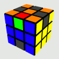
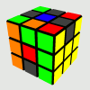
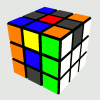
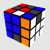

Step 4


Six edges and four centers
remain unsolved. You should need less than 15 moves on average in this
step, but don't be afraid of MU! Mastering different techniques allows
you to detect interesting lucky configurations. There's more to learn
than the method described here.
An edge is correctly oriented
if you can solve it with a sequence
in the group generated by <U, D, L, R, F2, B2>, i.e.:
- For UL-edge and UR-edge (the last yellow/white pieces), the orientation is correct if the L/R-facelet (yellow/white) is on F/B/L/R-side.
- One of the four other edges is correctly oriented if a facelet matches the adjacent M-center's color or the opposite M-center's color.
On the examples below, yellow and white facelets always are on L/R, but you can perfectly work with any configuration for the other stickers.
- For UL-edge and UR-edge (the last yellow/white pieces), the orientation is correct if the L/R-facelet (yellow/white) is on F/B/L/R-side.
- One of the four other edges is correctly oriented if a facelet matches the adjacent M-center's color or the opposite M-center's color.
On the examples below, yellow and white facelets always are on L/R, but you can perfectly work with any configuration for the other stickers.
 |
 |
 |
 |
| Edge
is OK. Red matches orange. |
Edge
is NOT OK. Orange and blue are not opposite colors. |
Edge
is OK. Yellow facelet on F-side. |
Edge
is NOT OK. White facelet on U-side. |
| Step 4a - Edges orientation | ||||||
You begin with an
orientation
step. Just make all edges correctly
oriented.
It's an iterative process. Adjust U and/or rotate the whole cube, your pattern belongs to one of three categories below where purple edges represent wrong orientations. Apply the sequence and the pattern will change. Do it again, as long as wrong orientations remain. Light-grey pieces stand for pieces already solved during previous steps (using Steps 1-2-3 or any other technique, corners-first for example).
|
||||||
| Step 4b - Finish L/R-sides | ||||||
Solve UL-edge and
UR-edge.
There's a constraint, you must keep the orientations you just obtained.
U and M2 moves are okay, but if
you perform a M/M' move, U2M/M' must follow. Very few possible
combinations, zero recognition time. The following
examples may help.
|
||||||
| Step 4c - Permute M-edges | ||||||
The case is easy to
identify,
so you should be
able to execute the right moves immediately. Only 3 cases: U2MU2,
U2M2U2 and E2ME2 (this last one may look a bit difficult, but it takes
only 1s and you can anticipate it before the end of 4b).
|
Using this simple technique
(and a good cube), you can solve the last 6 edges and 4 centers in
about 3 seconds on average (inspection and U adjustement included). No
need to learn highly engineered last-layer sequences, and the few
fingertricks based on <M, U> come quick.
- When centers are oriented (orange/red on top), the orientation pattern is very easy to recognize. Solving the last corner-edge pair of Step 2 almost always ends with an R/R' move. This means that you can choose to use r/r' if needed and orient centers early. Most of Step 3 sequences leave this orientation unchanged. It's often possible to recognize the orientation pattern of edges before the end of Step 3.
- The orientation step can be very fast, especially when there are exactly three bad edges in U-side. In 13 cases out of 32, it requires five moves or less. If you orient centers early, you can immediately detect a lucky case for this method.
- Orientation sequences always end with M', and before this move, you have the choice between U and U'. Note that 4b sequences frequently begin with an inner slice move. In fact, 4a and 4b can be one only step. It's easy to locate L/R-edges during the orientation step (white and yellow facelets - bright colors - help in tracking them), even when going almost full speed. With practice, you'll see that merging 4a and 4b is a kind of natural auto-optimization.
- Step 4c sometimes begin with a U2 move, so don't put U-corners in place too fast at the end of 4b. Such an optimization is automatic when 4c is U2M2U2, and more difficult with a 3-cycle.
- When centers are oriented (orange/red on top), the orientation pattern is very easy to recognize. Solving the last corner-edge pair of Step 2 almost always ends with an R/R' move. This means that you can choose to use r/r' if needed and orient centers early. Most of Step 3 sequences leave this orientation unchanged. It's often possible to recognize the orientation pattern of edges before the end of Step 3.
- The orientation step can be very fast, especially when there are exactly three bad edges in U-side. In 13 cases out of 32, it requires five moves or less. If you orient centers early, you can immediately detect a lucky case for this method.
- Orientation sequences always end with M', and before this move, you have the choice between U and U'. Note that 4b sequences frequently begin with an inner slice move. In fact, 4a and 4b can be one only step. It's easy to locate L/R-edges during the orientation step (white and yellow facelets - bright colors - help in tracking them), even when going almost full speed. With practice, you'll see that merging 4a and 4b is a kind of natural auto-optimization.
- Step 4c sometimes begin with a U2 move, so don't put U-corners in place too fast at the end of 4b. Such an optimization is automatic when 4c is U2M2U2, and more difficult with a 3-cycle.
Depending on the position of
the last two L/R-edges, you may shorten the orientation sequence by
changing the final center orientation. I found 28 special cases (after
adjusting U-layer), some of them are interesting in speed-cubing others
only for fewest-moves solving.
Look at case 5a for example. If you've got only two misoriented edges on bottom, and if UL-edge or UR-edge is at DF and the other at UF, then you have to make an M move. The "*" tells you that three misoriented edges have appeared on top. Finish the orientation with adjusting U and performing MUM' or M'UM' for example. No "*"? Your best friends, learn them!
You should notice that symmetries play a very important role here.
Look at case 5a for example. If you've got only two misoriented edges on bottom, and if UL-edge or UR-edge is at DF and the other at UF, then you have to make an M move. The "*" tells you that three misoriented edges have appeared on top. Finish the orientation with adjusting U and performing MUM' or M'UM' for example. No "*"? Your best friends, learn them!
You should notice that symmetries play a very important role here.
| 1a: DF+UF - M | 2a:
UF+UR - M* 2b: DB+UR - M'* 2c: UF+UB - MU2M'UM'* 2d: DF+DB - M'U2M'UM'* |
3a:
UF+UB - M 3b: DB+UR - M* |
|||
| 4a:
DF+UF - M'* 4b: DF+UL - M* 4c: DF+DB - M* 4d: UB+UR - M' |
5a:
DF+UF - M* 5b: UR+UB - M* |
6a:
UL+UR - M* 6b: UB+UR - M* 6c: DF+UB - UM* 6d: DF+UR - U'M* 6e: DF+DB - M |
|||
| 7a:
DB+UR - M* 7b: DB+UB - M* |
8a:
DF+UL - M'* 8b: DF+UF - M* 8c: DF+DB - U2M'* 8d: DB+UB - UM' 8e: UF+UR - UM* 8f: UF+UB - U2M* 8g: UB+UR - M* |
9a: UB+UL - M2U'M |
Read my last words about this method.